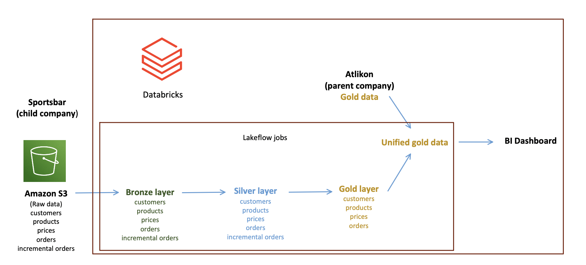
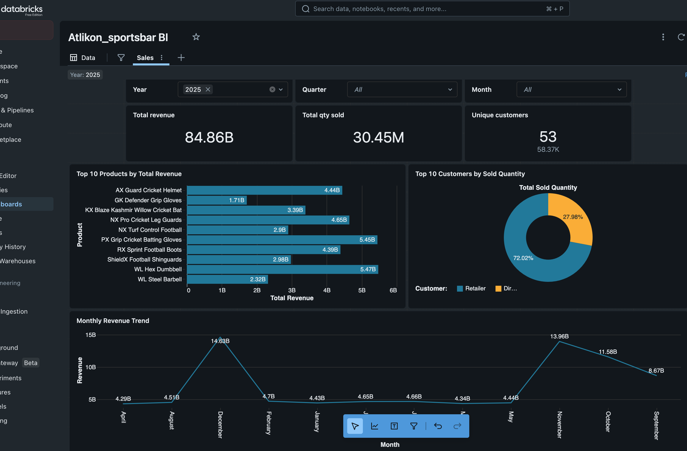

ELT Pipeline - Daily sales data integration
- Ingested daily sales dataset (csv) from Amazon S3 into ADLS Gen 2
- The new data is validated, cleaned and integrated into the Data Lake (ADLS)
- The data is analysed for business insights
- Automated this process with Azure Data Factory pipelines and Databricks notebook


ETL Pipeline - Data integration after new company acquisition
- Ingested datasets (csv) from parent and child companies from S3 to Databricks
- Cleaned and integrated the datasets from the companies
- Created a Databricks dashboard with business insights
- Created a Databricks pipeline for incremental sales data in the future